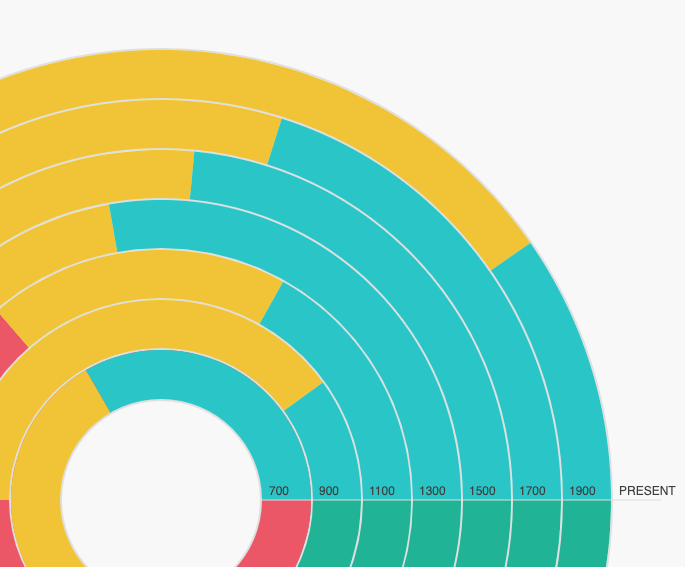
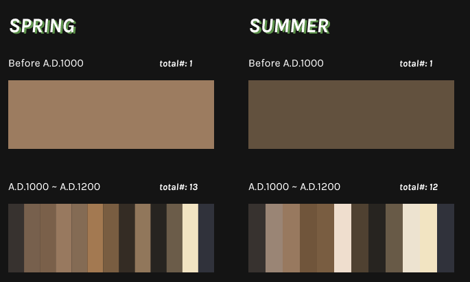
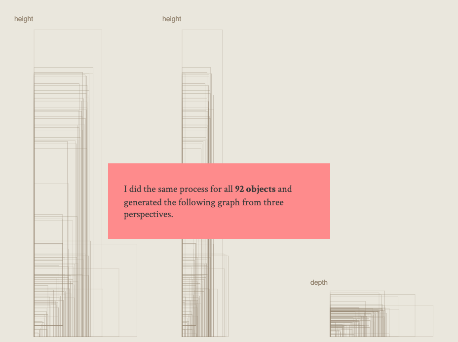
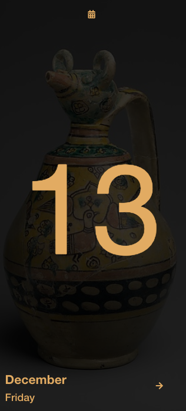

Time Travel In MET
- Major Studio 1 Projects Showcase
Hello, I'm Yiran, studying Data Visualization at Parsons School of Design. Between September 2019 and December 2019, our program collaborates with Metropolitan Museum of Art (MET) and visualizes collections based on MET API from different perspectives. This website documents my process of building 4 projects through the semester.
My Concept of these 4 projects is Time Travelling. In each project, I presented artworks in chronological order. I wish you could learn the history of collections from my projects.
Project 1 - Quantitative Data
-
In this project, I visualizes quantitative data of number of paintings about 4 seasons in different decades. This provide a clear overview of the proportion of paintings in each season throughout the history.
- 
Project 2 - Qualitative Data
-
Making some more progress from project 1, this project demonstrates colors used in paintings in every season throughout the history. For every painting that are related to seasons in MET collection, I extracted the dominant color of every artwork to see if there were any favored colors in every season.
- 
Project 3 - Interactivity
-
In this project, I analyzed the dimension of clocks in the MET collections. I included multiple interaction and animation in this project in order to tell users the story behind this project as users scroll down the page.
- 
Project 4 - New Media
-
For this project, I was inspired by calendars from souvenir stores in museums. The calendars usually include some images of artworks on each page. Therefore, I decided to create a digital calendar that includes highlighted artworks from the MET.
- 